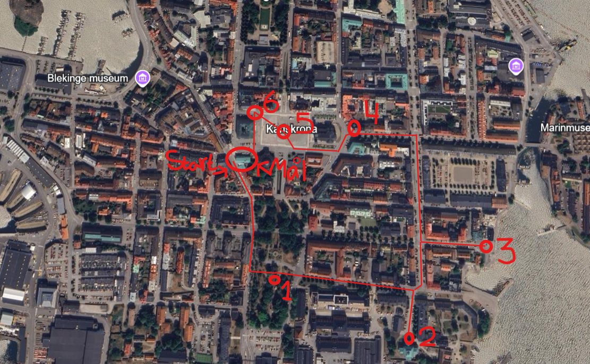

𝖨𝗇𝖿𝗈𝗋𝗆𝖺𝗍𝗂𝗈𝗇 𝖨𝗇𝗇𝖺𝗇 𝖭𝗂 𝖯å𝖻ö𝗋𝗃𝖺𝗋 𝖩𝖺𝗄𝗍𝖾𝗇!
Information Innan Ni Påbörjar Jakten!
TIPS!
Titta dig noga för innan du går över en väg.
Använd dig av övergångsställen.
Släng inget skräp, vi ska lämna stan lika fin som vi hittade den.
Skattjakten har inte någon begränsad tid, så stressa inte.
Det viktigaste är att ni har roligt!
HUR FUNGERAR JAKTEN?
Svara rätt på frågan för att komma vidare.
Det finns vägbeskrivning till alla gåtor.
Jakten består av 6 delar.
Gåsträckan är 2km.
Det tar 30 minuter att göra klart jakten.
När du är klar med jakten väntar ett pris på dig i Stadsbibloteket!
Historian om hur Filip försvan
Historien om hur Filip försvan
Det här är berättelsen om en bonde som har tappat bort sin katt, Filip. En dag bestämde sig Filip för att smyga ut hemifrån och gömma sig i den lilla staden Karlskrona. När bonden vaknade på morgonen märkte han att Filip var borta. "Vart kan han ha tagit vägen?" undrade bonden oroligt. Han hade många frågor men inga svar, och visste inte riktigt vad han skulle göra. Men som tur är finns det fortfarande hopp! Nu behöver bonden er hjälp för att hitta Filip igen! 
 Vägbeskrivning till Amiralitetsklockstapeln
Vägbeskrivning till Amiralitetsklockstapeln
Bonden fick höra att Filip klättrat upp i det gula klocktornet. Hemma brukade Filip ofta klättra i höga träd för att få njuta av utsikten över landet.
Uppdrag 1
Vilken flagga sitter på toppen av gula klocktornet?